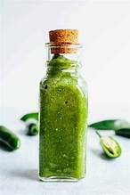

Green Sauce Salsa

"Kasper Killer" Salsa
A chunky warm jalapeno salsa that will add a kick to any meal
Ingredients:
- 6 large fresh Jalapenos
- 1/4 large Yellow Onion
- 2 large Garlic Cloves
- 1/2-3/4 cup Corn Oil
- 1 tsp. of Kosher Salt
Steps:
- Bring small pot of water to boil. Simmer the jalapenos and onions for about 15-20 minutes until fork tender. Keep some of the excess water
- Combine corn oil, garlic, jalapenos, onion and salt in blender
- Blend until smooth and creamy, about 3-6 minutes.
- Taste for salt, and adjust if necessary. Transfer to squeeze bottle and refigerate. Lasts about a week.